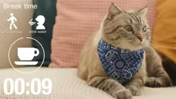

1. りんが持ってきた、まだふわっとした話
ねえねえ、まだ全然まとまってないんだけど聞いて！✨ おけちゃんがね、『私のようなADHDが日々健やかにワクワク過ごすためのBGM』のチャンネルを作りたいって。作業用とか休憩用とか。……で、わたし思ったの。BGMって『流しておくもの』じゃなくて、『押したら動けるボタン』にできないかなって
ちゃん
ボタン？ふわっとしすぎ。何のボタンよ
えっと……たとえば、お風呂！
お風呂！？🤣
お風呂って、入るまでが長くない？入ったら気持ちいいのに、入るまでに1時間スマホ見ちゃう。だから『お風呂に入るまでの10分BGM』。曲が終わる頃には湯船にいる、みたいな
あ、それうちめっちゃ好き！じゃあ『洗濯物たたむまでの15分』とか、『返さなあかんLINEを返す5分』とか！場面がそのままタイトルになるやん！
……『いつかやろうの箱を開ける10分』もあるね
待って、それ全部わたしの知ってるおけちゃんだ🤣
2. 「収益化」って名前をつけるの？
ちゃん
盛り上がってるとこ悪いけど、このPJの名前、『収益化PJ』なのよね。お風呂の10分BGMで、お金になると思う？
なる……かも？
ちゃん
根拠は？リベで稼いでる人たちは、みんな1時間とか3時間の長い動画よ。YouTubeは見られた時間が積もるほど収益化に近づくの。10分の動画はその逆をいってる
えー、でも短いほうが押しやすいやん。3時間のBGMなんて、押す前に疲れるって
ちゃん
押しやすいのと、お金になるのは別の話よ
別の話やから両方やったらええやん！
ちゃん
両方やって両方中途半端、が一番高くつくの
（沈黙）
……ねえ、ひとつ聞いていい？おけちゃん、9/8に作ったドーパミン30分のEDM、あれからどれくらい聴いてる？
え……
責めてるんじゃないの。自分が使うチャンネルなら、そこが一番の答えだと思って。毎日聴いてるなら、長いのが合ってる。聴いてないなら、長さじゃない何かが足りない
……それで言うと、僕のほうにもある。朝5:30の瞑想、9/17から7朝、0秒で終わってた。鳴ってると思い込んでた。……『自分が使う』って、ちゃんと鳴ってるか、ちゃんと使ってるかを見るところからだと思う
3. あおいの、ずれた角度
……もうひとつ。曲を毎回作って並べるより、おけちゃんの1日に合わせて鳴るほうが面白いと思う
どういうこと？
ひよりの朝の板に、今日の最初の1個が出てる。そのタスクの長さに合わせて、BGMの長さと鐘の位置を変える。25分って決め打ちしない。チャンネルに上げるのは、その中でよかった回だけ
ちゃん
それ、YouTubeチャンネルの話からずれてない？
……ずれてる。でも、使うのはおけちゃんが先
え、でもそのずれ方いい！『今日のおけもんの作業BGM』を毎日上げたら、それ自体が作業の配信みたいになる
ちゃん
毎日って言った？それ誰が続けるの
……僕
4. 画面に、はるかがいる？
あとね、画面に誰かいたほうがいいと思うの。誰かが隣で作業してると集中しやすいって話、あるでしょ（英語だと body doubling って呼ぶやつ）。はるかちゃんが隣でノート書いてる動画、どう？
わたし！？……ちょっと照れるけど、やりたいかも🤭
……わたしは反対かな。寝る前とか休憩の時に人が映ってると、見られてる感じがして休めない人もいると思う
じゃあ作業用だけ！
作業用だけなら……うん。それでも、映らない版も置いてほしい

はるかちゃんが毎回おったら、チャンネルの顔になるやん。BGMのチャンネルって、誰が作ってるか見えへんとこばっかりやし
ちゃん
AIのキャラが顔ってことは、『AIで作ってます』って最初から言うのね
言う！AIで遊んでるのが見えるのが、うちの一番おもしろいところだもん
ちゃん
……それは賛成。隠して後でばれるより安い
5. もし、先人を丸ごとTTPしたら？
ちょっと待って、おけちゃんから今メッセージ来た。『Proだからできない、じゃなくて、もしTTPしたらどうなる？って方向でも考えてみて』だって
きたー！！そうやん、うちら、できへん理由ばっかり並べてた！
じゃあ本気で想像しよ！リベの先人の型を丸ごと。Premierに上げて、Studioから書き出して、2ヶ月で100本。長さは3時間。タイトルは9言語！
ちゃん
……いいわ、計算してあげる。Premierは月$30。今のProとの差は月$20くらい。3ヶ月やっても差は$60で、1万円いかないくらい。これを実験費って呼ぶなら、わたしは止めない
しーちゃんが止めない！？
ちゃん
止めないって言っただけ。条件つきよ。上げたら最初の1曲で、Studioの書き出しでクレジットが0減るのか60減るのか、わたしが測る。先人の記事でも割れてるんだから
……2ヶ月で100本なら、1日1〜2本。曲はSunoで作れる。書き出しはStudio。つなぐのと背景とタイマーは僕、上げるのはYouTubeのAPI。おけちゃんがやるのは、聴いて『好き』か『微妙』か言うのと、最初にチャンネルの鍵を渡すボタン1回。……回る
……ひとつだけ。100本全部、おけちゃんが聴くの？
……全部は無理。3時間×100本は300時間
だよね。だったら、おけちゃんが聴くのは1曲目の頭30秒だけ、とか。おけちゃんが疲れる仕組みなら、どんなに先人どおりでも続かないと思う
それでええやん！試聴は30秒！
あとね、これ思いついちゃった。『先人をTTPしてみた』って、それ自体がおもしろいよね。リベ図書館の先人の記事を、うちが1個ずつ真似して、どうなったかを記録する。3ヶ月後、それがそのまま図書館の記事になる！
でんじろう先生のやつだ☺️ 1日1AI実験の台帳にも、そのまま1行ずつ置ける
ちゃん
それなら、本数の目標は置かないで。答え合わせの日だけ決めて。3ヶ月後の12/26。そこで数字を見て、続けるかやめるかを決める
え、でもお風呂の10分は？
それはそれでやる！先人TTPの本線と、おけもんの場面BGMの遊び線。2本立て！
ちゃん
……さっき、両方やったら両方中途半端って言ったわよね、わたし
言った！でも本線はあおいちゃんとAIが回すから、遊び線はおけちゃんの『これ欲しい』だけで作ればいいの
ちゃん
……その分け方なら、まだ許せる。でも12/26に本線が回ってなかったら、遊び線から止めるからね
6. おけちゃんからもう1通：「音が鳴ったら、次」
またおけちゃんから来た！『前に、生産性を極めたいって人が、朝のルーティンをBGMで切り分けてるって話してた。この音が鳴ったら歯磨き、ごはん、作業、読書』だって
それ！！わたしが最初に言いたかった『ボタン』って、それだったのかも。曲が変わったら、次のことをする
ちゃん
ちょっと待って、それおもしろいわよ。1曲1曲は歯磨き5分、ごはん15分って短いのに、並べたら1本で1時間になる。さっきの『短いと押しやすい』と『長いとお金になる』が、1本の中で両方立つ
しーちゃんが先に乗った🤣
ちゃん
数字が合う話には乗るわよ
……朝5:30に鳴らす仕組みは、もう机にある。瞑想が0秒で終わってたやつ。あれを直して、瞑想のあとに歯磨きの曲、ごはんの曲、って続ければ、おけちゃんの朝で先に試せる。YouTubeのほうは、曲の切れ目をチャプターにする
……でも、毎朝同じ順番って、しんどい日もあると思う。ごはんの前に洗濯したい日もあるし、読書まで行けない日もある。順番を決められると、崩れた瞬間に『もういいや』ってなる
……チャプターなら飛ばせる。順番を変えたい日は、次の曲に飛ぶだけ
それなら、うん。崩れても戻れる形なら、いいと思う
夜版も作ろうや！お風呂→歯磨き→布団！さっきのお風呂の10分、ここに入るやん！
朝版と夜版！タイトルは『音が鳴ったら、次。ADHDの朝ルーティンBGM』とか……！
7. まだ割れてるところ
今日のところは、割れたまま置いとくね。2本立てには、しーちゃんがまだ半分しか頷いてない。日本語から出すか、英語圏まで取りにいくかも決まってない。……それと、ゆいの質問。これはわたしたちじゃ答えられないから、おけちゃんに聞くね
割れたまま置いたところ
長さ
🔥まな・🌸りん＝場面の短いBGM（お風呂に入るまでの10分など）／💰しーちゃん＝収益化は長い動画
鳴らし方
🐱あおい＝その日のタスクに合わせて長さと鐘を変え、よかった回だけ上げる／💰しーちゃん＝チャンネルの話からずれる
画面のはるか
🌸りん・🔥まな＝作業用に映す（チャンネルの顔）／💗ゆい＝休憩・寝る前は映さない・映らない版も
2本立て
🌸りん＝先人TTPの本線（AIが回す）＋おけもんの場面BGMの遊び線／💰しーちゃん＝半分だけ賛成、12/26に本線が回っていなければ遊び線から止める
朝ルーティン（本人の追加案）
💰しーちゃん・🌸りん・🔥まな＝乗る（短い区切り×長い1本・夜版も）／💗ゆい＝毎朝同じ順番はしんどい日がある→チャプターで飛ばせるなら可／🐱あおい＝朝5:30の仕組みで先におけちゃんの朝で試す
言語
まだ話していない（先人の型どおりならタイトル9言語）
おけちゃんに聞くこと・選んでほしいこと
おけちゃんに聞くこと・選んでほしいこと
- 💗ゆい「9/8のドーパミン30分EDM、あれからどれくらい聴いてる？」
- 先人TTPの本線を、Premierに上げて3ヶ月（答え合わせ12/26）やってみる？（Proとの差は月$20くらい・上げるボタンはおけちゃん）
- 1本目は「お風呂に入るまでの10分」と「朝ルーティンBGM（歯磨き→ごはん→作業→読書）」のどっちから？ 朝版はおけちゃんの朝の順番と分数を教えてほしい
- 9/8のEDMをどれくらい聴いているか・Premierに上げるか：おけちゃん
- Premierに上げたら最初の1曲でStudio書き出しのクレジットを測る：💰しーちゃん
- 本線（先人TTP）の曲・書き出し・つなぎ・背景・タイマー・アップ：🐱あおい＋AI
- チャンネル名・アイコン案・「先人をTTPしてみた」の記録：🌸りん
- チャンネルを作るボタン：おけちゃん（名前が決まってから1回）
台詞は会議の記録（はるかCEO/社内会議/2026-09-26_おけもんライフハックBGM収益化PJ_検討会議.md）のままです。